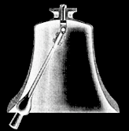

A nice and simple system that creates a deterministic chaotic behavior is a double pendulum. To an ordinary pendulum another pendulum is attached. The long-term behavior of this system is very sensitive to the initial conditions when the pendulum is released: the lengths, the masses and the exact positions of the pendulums.
In the visualization on the right you can experiment with different starting lengths and positions. Clicking the trace button one can follow the trace of the pendulum more closely. One can also alter the direction and strength of the gravitational force.
|
 |
A church bell with its movable clapper
forms a simple double pendulum.